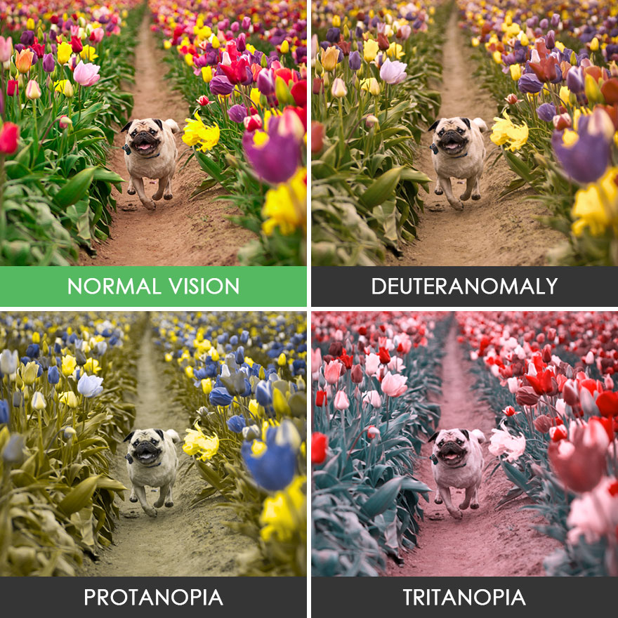
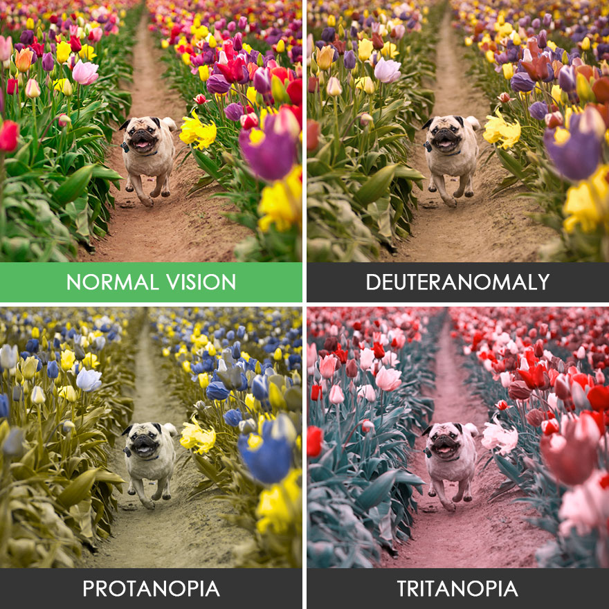

Accessibility
Website accessibility means that a website is designed for use by all users, regardless of any disability or impairment they may have. It’s not only about being able to see, hear, or understand: users need to be able to navigate through websites and interact with your content.
With the current focus on accessibility, today's web developers don't have to work as hard to create accessibility solutions- many are now built into browsers like Google Chrome or frameworks such as Bootstrap. Creating an accessible website still requires extra planning and committment however, from both a design and coding standpoint.
This page is not an all-inclusive list of accessibility issues. The goal of this page is to illustrate accessibility issues within the categories of impairments commonly addressed in web design.
Visual
A lot of the time when we think of visual impairments, we think of blindness. Visual accessibility, however, needs to address various forms of color blindness and even eye strain.
Alt text
Individuals with visual impairments often use programs or devices called screenreaders to interact with content on the web. Screenreaders speak out the code of a webpage, letting users hear each line of code that you write.
The Alt Attribute provides information about an image to screen readers. It also provides text in place of an image if the image cannot be loaded on the page. Alt text should describe the content and context of an image. When writing your alt text it's often helpful to think of describing the image to someone over the phone.
It's also important to remember that any text within your image will not be read by a screenreader.
Color Blindness
Approximately 1 in every 12 men (and 1 in every 200 women) are color blind. Although color blind people can see things just as clearly as everyone else, they aren’t able to fully discern red, green or blue light. There are different types of color blindness; deuteranopia (red-green color blindness) and protanopia (red color blindness) are the most common.
People with deuteranopia have difficulty distinguishing between red and green. Similarly, to people with protanopia, all red colors look dull.
Even if you can see all of the colors, some people simply have a harder time distinguishing between them. Take a Color Blindness Test to see if you are affected by color blindness.
For more information about color blindness, read National Eye Institute's facts about color blindness.
Eye Strain
Things that would make people with no visual impairments strain can make websites unusable those with visual impairments. Designing with visual accessibility in mind makes your site better for all users.
Text size: Do not fix a font size on your website by setting a size in points or pixels. Use relative sizes like "%" or "em" instead. Test to see how resizing your text changes the layout by zooming in and out of your browser.
Contrast: You don't necessarily have to have a vision impairment to be affected by contrast issues on a web page. Providing contrast between colors, sizes and styles of elements on your page makes your content easier for everyone to absorb. Users who have to deal with glare on small phone screens or low quality computer monitors benefit greatly from sufficient contrast.
Use tools like the WebAIM Contrast Checker to see if your color combinations meet accessibility standards.
 

Using colors as the only indicator for design elements can sometimes confuse colorblind users. The picture above exemplifies how users with different types of color blindness would see the same photo.
Auditory
Auditory disabilities range from mild or moderate hearing loss in one or both ears (hard of hearing) to substantial and uncorrectable hearing loss in both ears (deafness). Some people with auditory disabilities can hear sounds but sometimes not sufficiently to understand all speech, especially when there is background noise. This can include people using hearing aids.*
The best way to accomodate users with auditory impairments is to include captions and transcripts for any media containing audio on your site. You can use Youtube's automated caption generating software to create captions on your videos. These automatic captions are generated by machine learning algorithms, so the quality of the captions may vary.
Transcripts are often helpful for users who would like to get through content faster as well, you can read the episodes of the Adobe Wireframe Podcast.
TED Talks also do an exceptional job of providing transcripts and captions for their content.
Don't rely exclusively on sound cues within your website - this is also for users who browse your page with their volume muted. If sound cues are used, they need to be reinforced by visual cues.

Cognitive
Cognitive impairments include a range of scenarios in which the user's ability to understand information is affected. This can include learning disabilities such as dyslexia and other disorders like Attention deficit hyperactivity disorder (ADHD) and Autism spectrum disorder (ASD). Cognitive impairments can also require other accessibility solutions to visual, auditory and physical effects of the impairment.
Depending on the individual needs, people with cognitive, learning, and neurological disabilities often rely on:
- Clearly structured content
- Consistent labeling of forms, buttons, and other content parts
- Predictable link targets, functionality, and overall interaction
- Different ways of navigation, such as utilizing search
- Options to suppress blinking, flickering, flashing, and otherwise distracting content
- Simple text that is supplemented by images, graphs, and other illustrations
For more information on accessibility, please refer to the Helpful Links page.
Back to Top ↑